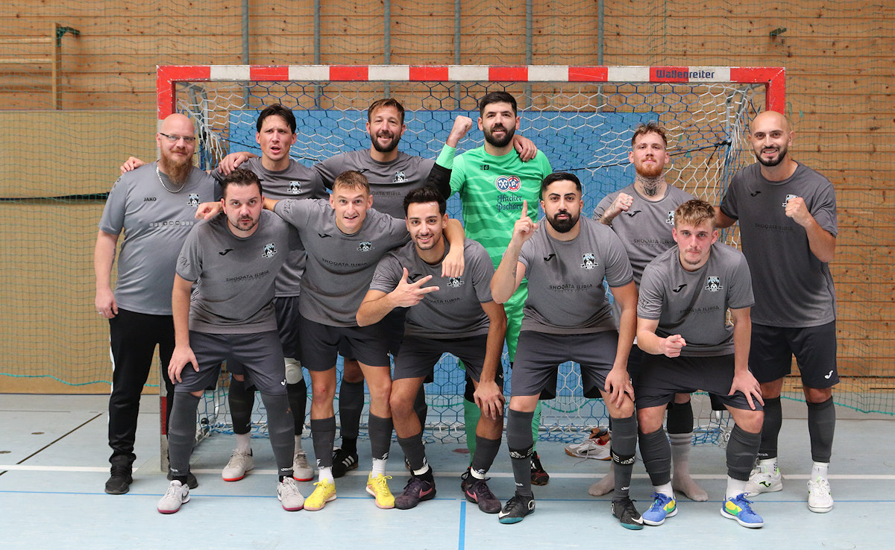

DEIN PLATZ AUF DEM PARKETT
Werde Teil unseres Teams.

Bereit für Futsal?
Du möchtest uns kennenlernen und mitspielen? Melde dich bei unserem Vorstand. Nutze das bestehende Vereinsformular oder schreib uns eine E-Mail.
Zum Vereinsformular ↗Das Formular öffnet auf der bisherigen Vereinswebsite. Für deine Anfrage sind diese Angaben hilfreich:
- Vor- und Nachname, E-Mail und Telefonnummer
- Geburtstag und Wohnort
- Aktueller Fußballverein
- Deine Nachricht oder Motivation
vorstand@futsal-allgaeu.net
Gablonzer Ring 8
87600 Kaufbeuren-Neugablonz